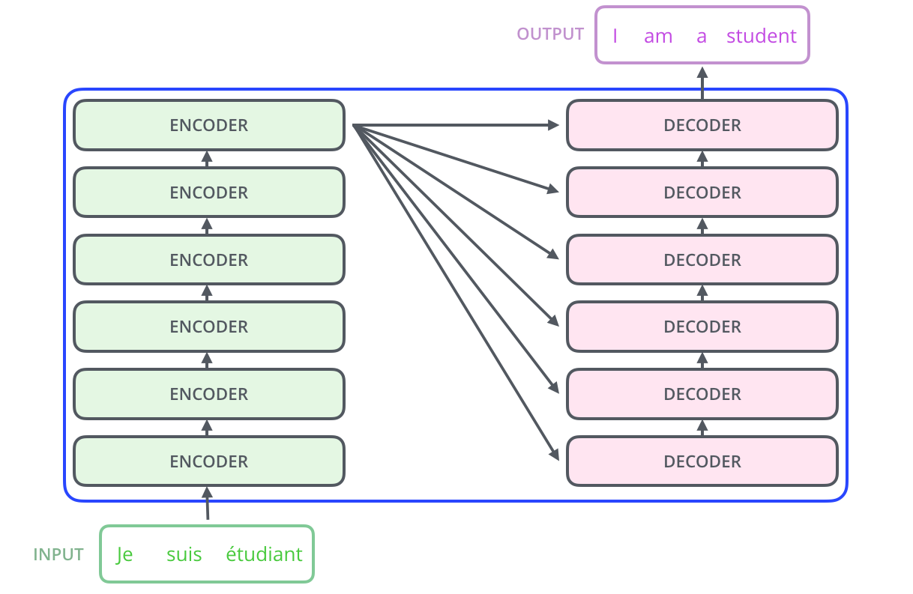

Transformer
A High-Level Look
In a machine translation application, it would take a sentence in one language, and output its translation in another.
Encoding
The encoding component is a stack of encoders (the paper stacks six of them on top of each other — there’s nothing magical about the number six, one can definitely experiment with other arrangements). The decoding component is a stack of decoders of the same number.

The encoders are all identical in structure (yet they do not share weights). Each one is broken down into two sub-layers:

- Self-attention layer: a layer that helps the encoder look at other words in the input sentence as it encodes a specific word.
- Feed-forward network: the exact same feed-forward network is independently applied to each position.
Decoding
The decoder has both Self-attention layer and Feed Forward layer, but between them is an attention layer that helps the decoder focus on relevant parts of the input sentence.

Encoding
Bringing The Tensors Into The Picture
The abstraction that is common to all the encoders is that they receive a list of vectors each of the size 512. The size of the list is a hyper-parameter we can set — basically it would be the length of the longest sentence in our training dataset.
- In the bottom encoder that would be the word embeddings,
- but in other encoders, it would be the output of the encoder that’s directly below.
After embedding the words in our input sequence, each of them flows through each of the two layers of the encoder.

Here we begin to see one key property of the Transformer:
Note
The word in each position flows through its own path in the encoder. There are dependencies between these paths in the self-attention layer. The feed-forward layer does not have those dependencies, however, and thus the various paths can be executed in parallel while flowing through the feed-forward layer.
An encoder receives a list of vectors as input, and processes this list by passing these vectors into a self-attention layer, then into a feed-forward neural network (the exact same network with each vector flowing through it separately), then sends out the output upwards to the next encoder.

Self-Attention
Note
Self-attention is the method the Transformer uses to bake the “understanding” of other relevant words into the one we’re currently processing.
As the model processes each word (each position in the input sequence), self-attention allows it to look at other positions in the input sequence for clues that can help lead to a better encoding for this word.

Self-Attention in Detail
First Step
The first step in calculating self-attention is to create three vectors from each of the encoder’s input vectors (in this case, the embedding of each word). So for each word, we create a Query vector, a Key vector, and a Value vector
Note
These vectors are created by multiplying the embedding by three matrices that we trained during the training process.
Notice that these new vectors are smaller in dimension than the embedding vector. They don’t have to be smaller, this is an architecture choice to make the computation of multi-headed attention (mostly) constant.

Second Step
The second step in calculating self-attention is to calculate a score.
Note
The score is calculated by taking the dot product of the query vector with the key vector of the respective word we’re scoring. The score determines how much focus to place on other parts of the input sentence as we encode at a certain position.
So if we’re processing the self-attention for the word in position #1:
- the first score would be the dot product of q1 and k1.
- the second score would be the dot product of q1 and k2.

Third and Fourth Steps
The third step is to divide the scores by the square root of the dimension of the key vectors used in the paper. This leads to having more stable gradients. There could be other possible values here, but this is the default.
In the fourth step, we pass the result through a softmax operation. Softmax normalizes the scores so they’are all positive and add up to 1. This softmax score determines how much each word will be expressed at this position. Clearly the word at this position will have the highest softmax score, but sometimes it’s useful to attend to another word that is relevant to the current word.

Fifth and Sixth Steps
The fifth step is to multiply each value vector by the softmax score (in preparation to sum them up). The intuition here is to keep intact the values of the word(s) we want to focus on, and drown-out irrelevant words (by multiplying them by tiny numbers).
The sixth steps is to sum up the weighted value vectors. This produces the output of the self-attention layer at this position.

That concludes the self-attention calculation. The resulting vector is one we can send along to the feed-forward neural network.
Matrix Calculation of Self-Attention
The first step is to calculate the Query, Key, and Value matrices. We do that by packing our embeddings into a matrix X, and multiplying it by the weight matrices we've trained (\(W^Q\), \(W^K\), \(W^V\)).

The other steps can be condensed into this formula:

Multi-Headed Attention
Multi-headed attention improves the performance of the attention layer in two ways:
- It expands the model’s ability to focus on different positions. In the example above,
z1contains a little bit of every other encoding, but it could be dominated by the actual word itself. - It gives the attention layer multiple “representation subspaces”. With multi-headed attention we have not only one, but multiple sets of Query/Key/Value weight matrices (the Transformer uses eight attention heads, so we end up with eight sets for each encoder/decoder). Each of these is randomly initialized. Then, after training, each set is used to project the input embeddings (or vectors from lower encoders/decoders) into a different representation subspace.

If we do the same self-attention calculation we outlined above, just eight different times with different weight matrices, we end up with eight different Z matrices. This leaves us with a bit of a challenge.
The feed-forward layer is not expecting eight matrices — it’s expecting a single matrix (a vector for each word). We need a way to condense these eight down into a single matrix. We concatenate the matrices then multiply them by an additional weights matrix \(W^O\).

Note
The result would be the Z matrix that captures information from all the attention heads. We can send this matrix forward to the feed forward layers.
Put everything together:

Representing The Order of The Sequence Using Positional Encoding
One thing that’s missing from the model as we have described it so far is a way to account for the order of the words in the input sequence. To address this, the transformer adds a vector to each input embedding. These vectors follow a specific pattern that the model learns, which helps it determine the position of each word, or the distance between different words in the sequence.
Note
The intuition here is that adding these values to the embeddings provides meaningful distances between the embedding vector once they’re projected into Q/K/V vectors and during dot-product attention.

There are some different possible methods for positional encoding.
The Residuals
One detail in the architecture of the encoder that we need to mention before moving on, is that each sub-layer in each encoder has a residual connection around it, and is followed by a layer-normalization step.

This goes for the sub-layers of the decoder as well.

Decoding
The encoder start by processing the input sequence. The output of the top encoder is then transformed into a set of attention vectors K and V. These are to be used by decoder in its “encoder-decoder attention” layer which helps the decoder focus on appropriate places in the input sequence.
The following steps repeat the process until a special symbol is reached indicating the transformer decoder has completed its output. The output of each step is fed to the bottom decoder in the next time step, and the decoders bubble up their decoding results just like the encoders did. And just like we did with the encoder inputs, we embed and add positional encoding to those decoder inputs to indicate the position of each word.

The self-attention layers in the decoder operate in a slightly different way than the one in the encoder.
Note
In the decoder, the self-attention layer is only allowed to attend the earlier positions in the output sequence. This is done by masking future positions (setting them to -inf) before the softmax step in the self-attention calculation.
Encoder-Decoder Attention
The “Encoder-Decoder Attention” layer works just like multi-headed self-attention, except it creates its Queries matrix from the layer below it, and takes the Keys and Values matrix from the output of the encoder stack.
The Final Linear and Softmax Layer
The Linear layer is a simple fully connected neural network that projects the vector produced by the stack of decoders, into a much, much larger vector called a logits vector.
Let’s assume that our model knows 10000 unique English words that it’s learned from its training dataset. This would make the logits vector 10000 cells wide — each cell corresponding to the scope of a unique word. That is how we interpret the output of the model followed by the Linear layer.